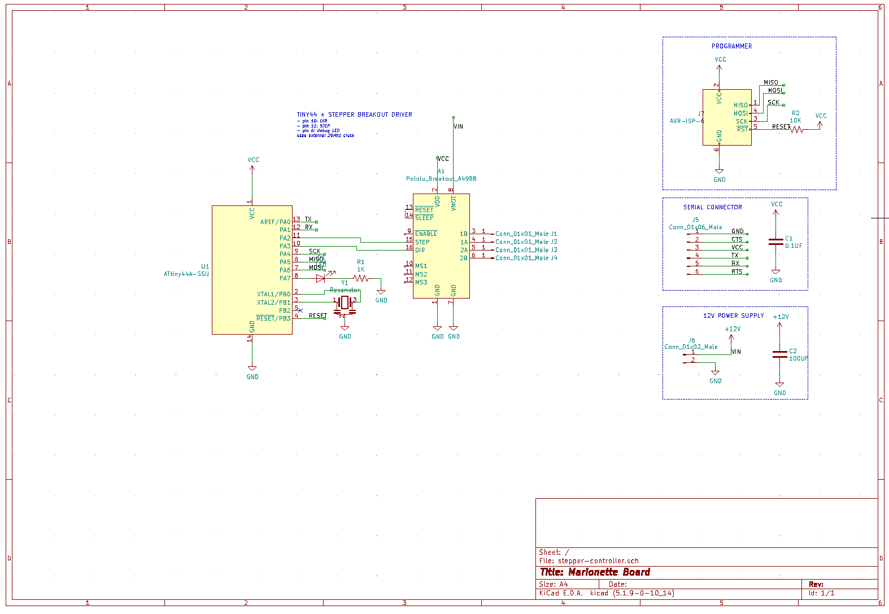
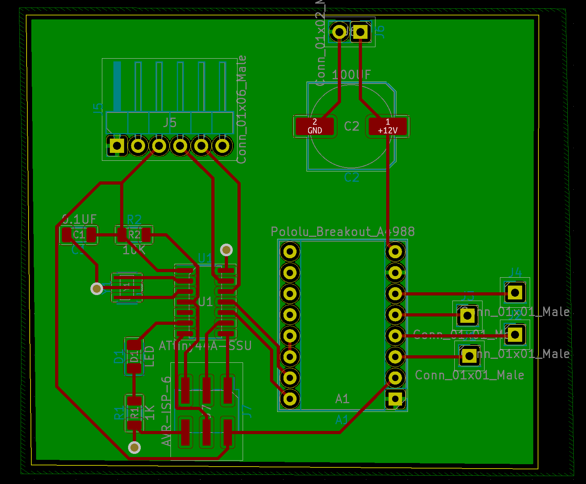

final project
blarionette: a pose controlled puppet arm
ideation
For the final project, we need to integrate the various things we've learned this quarter: pcbs, serial communication, sensors, mechanisms... all the good stuff. In our in-class brainstorming excercise, I sketched out an idea for a puppet with stepper motors controlling each joint. Nadya showed me that Jennifer Jacobs made such a shadow puppet, exactly 10 years ago- and it's really cool! Nadya proposed the puppet could be driven by pose input, and I thought it'd be funny to have the puppet controlled by strings, i.e. a marionette.Controlling an entire puppet is perhaps out of scope for a one week project - or at least a stretch goal. To break this project up, I thought I could break each joint into a module consisting of a logic + control board driving a stepper motor. To start, then, I made just an arm. Now that the parts & code are in place, building another arm, or a leg, should be much quicker in the future.
Some (non-electronics) materials planning of things needed:
- NEMA 17 stepper motors (1 per joint)
- delrin, to laser cut marionette appendages
- thread, to connect motor to joint
- pulley, to un/roll thread (1 per stepper motor)
- some sort of 3D printed fixture
- jellybean parts
circuit design & fabrication
The board combines my circuits from the last couple of weeks. Last week we used a 20Mhz crystal and FT232 serial connection to send messages the the tiny44. I controlled a stepper motor using the A4988 driver in Drive Train week. Putting these together, my board powers the tiny444 over USB power with 2 pins used to control the stepper motor, with 12V power for the motor. I learned from my past mistakes and added a 100nF capacitor across motor power to avoid fire. I use a double-sided pcb to make the bottom side the ground plane.


Milling the bottom side of the boards took a few tries: I think the OtherMill should have a alignment bracket to be able to reliably flip the board over, but I couldn't find it at The Mill (I should look around in lab for one, too). I upped my trace clearance to be 2mm: it's a few more minutes of milling time, but will save quite a bit of time upstream to help avoid making mistakes while I'm trying to move quickly.

The vias refused to connect at first, but after throwing enough solder at the problem everything was working. The second board was the first time I could upload firmware on the first try. Hooray!
firmware
The microcontroller needs to recieve a message over serial which sets the stepper position. Eventually, this will be a joint angle that is mapped to a vertical displacement. I can make that conversion on the computer-side. The motors I'm using have 200 steps/revolution, so sending 200 will make one full rotation, then sending 300 will make another half turn, etc.Importantly there's no e.g. limit switch to establish where the stepper is at 0. My plan is to manually turn the steppers until the string is fully extended prior to turning the system on. Another takeaway from this initial test is how long it takes a stepper to move (relative to how quickly we can move our arms). Decreasing pulse width will increase rpm, but I should expect a sort of stop-motion effect from the eventual puppet. Code is below. To set the fuse bits to use the 20Mhz clock, I used the command: avrdude -p t44 -P usb -c avrisp2 -U lfuse:w:0x5E:m
fixturing the arm
I laser cut the arms out of Delrin. It seemed reasonable for the whole arm be about 200mm long. I originally had grand ideas of a stage which will house all the electronics inside. I want to focus more on the arm though - an enclosure is of course an important part of the system, but less of a priority for me for the project. I already had a NEMA 17 bracket from a couple weeks ago - I made a horizontal bar which spaces out the motors at the correct distance for the size of my arms. To mount the bracket to the horizontal bar I used heat set inserts. The shoulder joint isn't actuated, so it will attach to the post on the side.


I got the model for a pulley from McMaster Carr for the 5mm shaft of my steppers. Then I tied thread to the pulleys and to the arms. I took... quite a while for me to learn how to tie a slipknot and get the lengths right to make sure the arm would have a full range of motion, but I got there in the end. Here is the arm's first wave hello; I ended up remaking the arms with smaller holes, and retying everything together tidier.

pose estimation
After installing a couple of different pose estimation repos which used out-of-date packages, I realized that p5 has a ml5.js project with off-the-shelf pose estimation. Using it, I can use WebSerial to connect to my boards! Pose estimation is basically a quite noisy sensor. It gives (x, y) joint positions for the left & right shoulder, elbow wrist, etc. The p5 example didn't distinguish left from right well at all; so to compensate, I only read in joints detected on one half of the screen.I find the angle of the joint relative to a vector pointing straight down. I found that an absolute step value of 650 (i.e. 3.25 revolutions) elbow joint stepper brings the arm to 90 degrees, so I use that to translate from angle to step. The wrist joint needs to be offset by the angle of the elow joint. I added some other bits to smooth things out a bit; for example, I only move the steppers if the change in value is greater than a tuned tolerance amount.